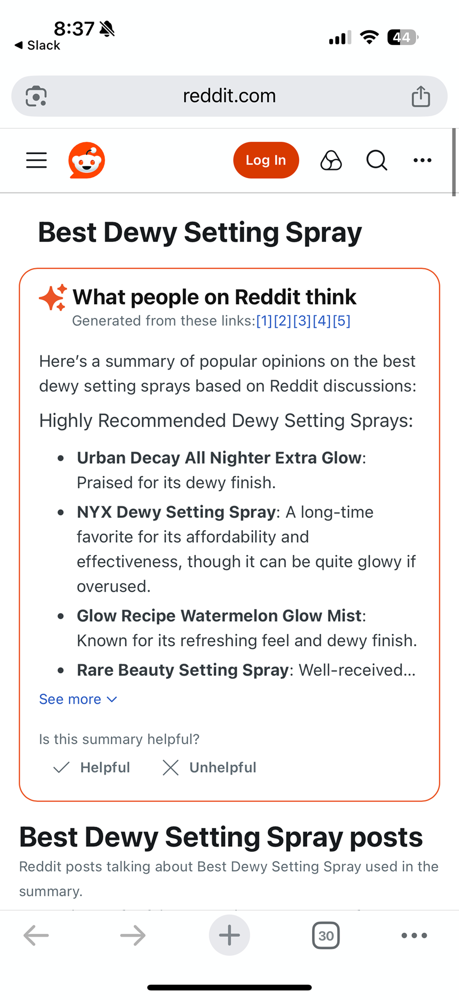

Synthesized summary
Visual separation
Stroke, icon, and color treatment clearly distinguish generated content
Linked attribution
Users can quickly see and explore source content
Truncated container
Balances providing users an immediate answer without burying critical source posts
Feedback unit
Provides user control and generation quality